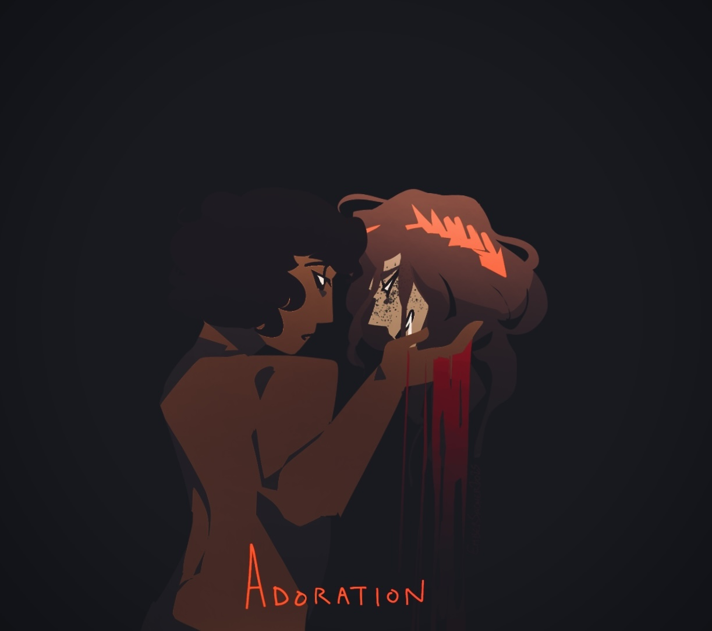
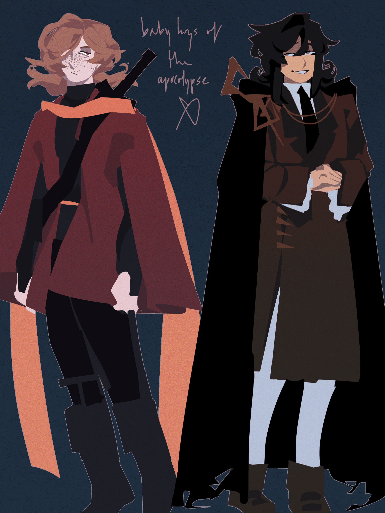
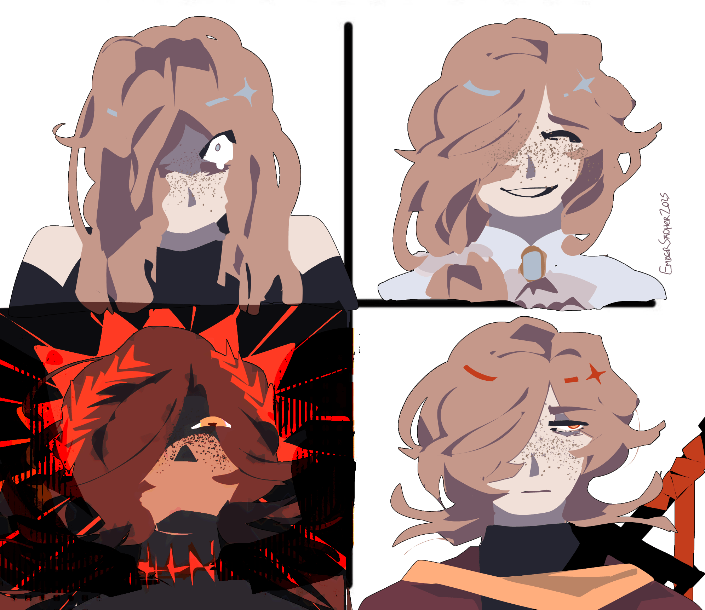
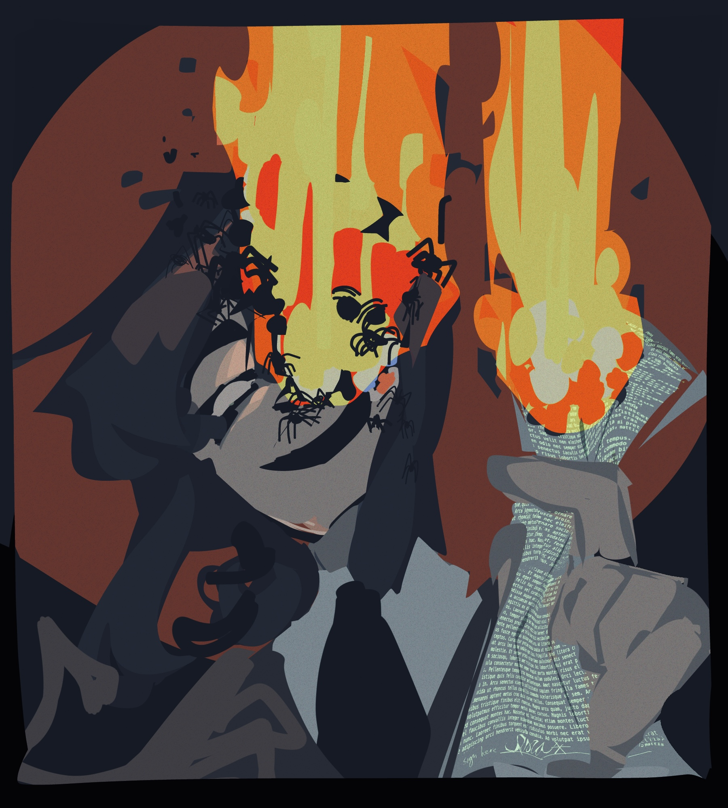
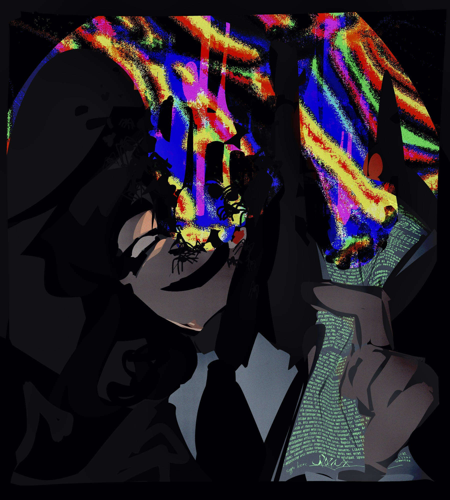
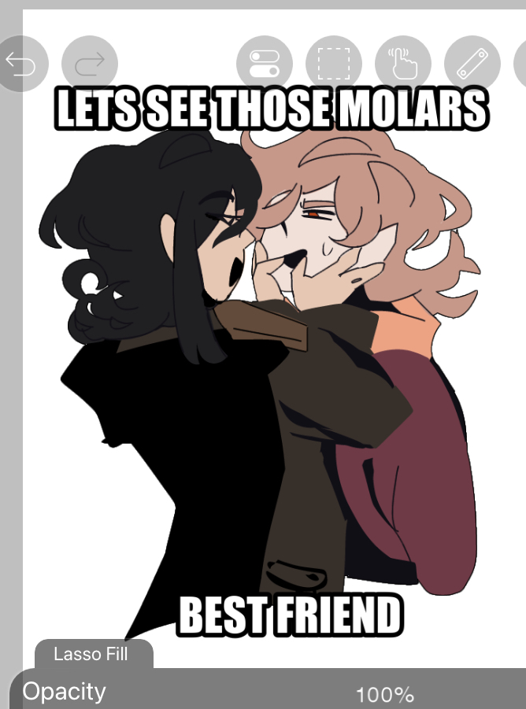

the lovers
creation date: dec 29
characters featured: isra, callisto
this was meant to be a small doodle and then it got out-of-hand. i reaaaally like the lineart on this one but it almost didin't happen. i blocked out the colors first and then halfway through was like "wait this would look OK with an outline" and then lasso-tooled lineart on top of all of my flats. i had separated all of the individual clothing and hair elements into different layers intending to do some cool collage-y shit and then i didn't even need it in the end 😭😭
the fact that this started as a throwaway doodle is very poignant in this one, i don't draw side-profiles like this and i don't draw bodies like this. i don't know if you can spot the difference but to me it's very evident. the style of this illust is cute ig but it's somewhat ooc for me.
anyhow, now for some less impulsive doodles

callisto's hair makes me tweak tf out sometimes, what is going on heree



iswaaaa
